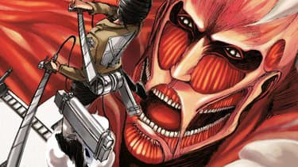
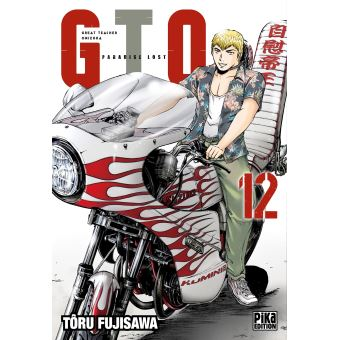
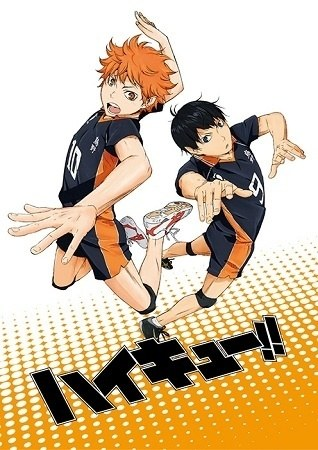
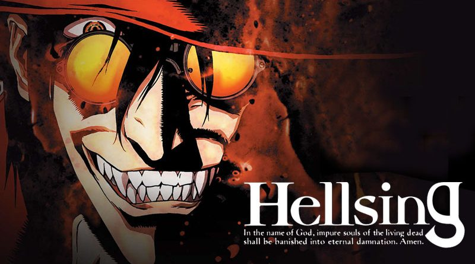
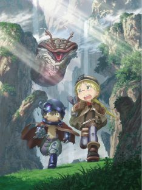

<table border >
  <tr>
    <th>Titre</td>
    <th>Auteur</td>
    <th>Catégorie</td>
    <th>Annéee de production</td>
    <th>Affiche</td>
  </tr>
  <tr align="center">
    <td>L'Attaque des Titans</td>
    <td>Hajime Isayama</td>
    <td>
      <ul>
        <li>Action</li>
        <li>Dark fantasy</li>
      </ul>
    </td>
    <td>2013</td>
    <td></td>
  </tr>
  <tr align="center">
    <td>Great Teacher Onizuka</td>
    <td>	Tōru Fujisawa</td>
    <td>
      <ul>
        <li>Comedie</li>
        <li>Drame</li>
      </ul>
    </td>
    <td>1999</td>
    <td></td>
  </tr>
  <tr align="center">
    <td>Haikyuu</td>
    <td>Haruichi Furudate</td>
    <td>
      <ul>
        <li>Comedie</li>
        <li>Sport</li>
      </ul>
    </td>
    <td>2014</td>
    <td></td>
  </tr>
  <tr align="center">
    <td>Hellsing</td>
    <td>Kōta Hirano</td>
    <td>
      <ul>
        <li>action</li>
        <li>surnaturel</li>
      </ul>
    </td>
    <td>2001</td>
    <td></td>
  </tr>
  <tr align="center">
    <td>Made in Abyss</td>
    <td>Akihito Tsukushi</td>
    <td>
      <ul>
        <li>aventure</li>
        <li>drame</li>
        <li>psychologique</li>
      </ul>
    </td>
    <td>2017</td>
    <td></td>
  </tr>
</table>
